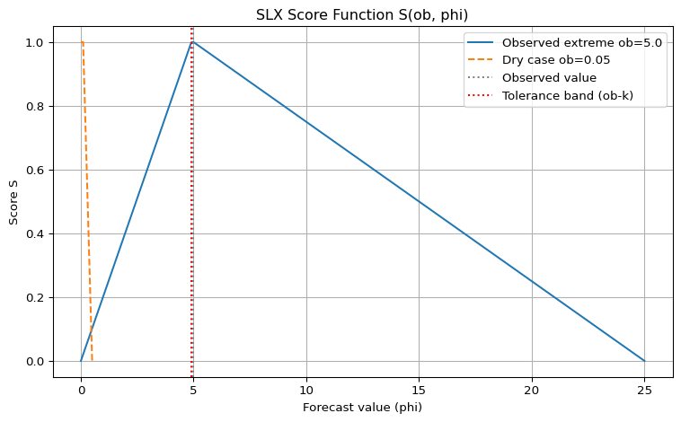

Verification of Precipitation Extremes with the SLX score
Structure of Local eXtremes - Sass (2021)
Author
Carlos Peralta
Published
July 14, 2025
Modified
July 17, 2025
Motivation
Modern high-resolution NWP models provide detailed precipitation forecasts, but traditional verification suffers from the “double penalty” problem when extremes are slightly displaced. When it comes to precipitation extremes, typically what we want to know is: - Where will the heaviest rain fall? - Where will it stay completely dry?
SLX (Structure of Local Extremes) by Sass (2021) evaluates the capability of high resolution models to predict extremes by using neighbourhood verification focused specifically on extremes.
The SLX Method
The SLX (Structure of Local EXtremes) method is a spatial verification scheme designed to evaluate how well numerical weather prediction models forecast the spatial structure of local extremes (both maxima and minima) in precipitation fields.
SLX computes four neighbourhood-based scores:
Component
What it measures
SLX_ob_max
How well forecast captures observed maxima locations
SLX_fc_max
How well observed field captures forecast maxima locations
SLX_ob_min
How well forecast captures observed minima locations
SLX_fc_min
How well observed field captures forecast minima locations
where the final score is defined as: \[\text{SLX} = \frac{1}{4}(\text{SLX}_{\text{ob\_max}} + \text{SLX}_{\text{fc\_max}} + \text{SLX}_{\text{ob\_min}} + \text{SLX}_{\text{fc\_min}})\]
Neighborhood Approach: For each extreme point, the method looks in a square neighborhood of width L around that point to find the corresponding extreme in the other field.
Score Function: Uses a piecewise linear function S that: Returns 1 for perfect matches
Penalizes over-forecasting more than under-forecasting (asymmetric)
Has a tolerance parameter k (default 0.1 kg/m²) for small values
How the calculation works
Identify Local Extremes
Local maxima: Points in the field that are higher than all their immediate neighbors (within a small tolerance).
Local minima: Points that are lower than all their immediate neighbors.
This is done for both the analysis (observation) field and the forecast field.
Define a Neighborhood
For each extreme point, define a square neighborhood of width L (so, for L=2, you look at a 5x5 grid centered on the point).
This allows for some spatial “fuzziness”—if the forecasted extreme is close but not exactly at the observed location, it can still be matched.
Compare Extremes Across Fields
For each observed maximum, find the maximum value in the forecast field within the neighborhood around that point.
For each observed minimum, find the minimum value in the forecast field within the neighborhood.
Do the same in reverse: for each forecasted maximum/minimum, look for the corresponding extreme in the analysis field.
Score Each Pair Using the Score Function
For each pair (observed extreme, forecasted value in the neighborhood), compute a score using a special function (see below).
Average the Scores
For each type (observed maxima, observed minima, forecast maxima, forecast minima), average the scores over all relevant points.
The final SLX score is the mean of these four component scores.
Why is the Score Function Needed?
The Problem:
Simply comparing the values (e.g., “is the forecasted max equal to the observed max?”) is not enough.
Forecasts are rarely perfect.
Small errors should be penalized less than large errors.
Over-forecasting and under-forecasting may have different practical impacts.
Zero (dry) values need special treatment.
The Solution: The Score Function The score function \(S( ob,\phi )\), chosen as a piecewise linear function that:
Returns 1 for a perfect match (forecast matches observation within a small tolerance).
Decreases linearly as the forecast deviates from the observation.
Penalizes over-forecasting more gently than under-forecasting (asymmetry), reflecting the idea that a “false alarm” is less bad than a “miss” in some applications.
For very small observed values (quasi-dry), uses a different branch to avoid dividing by zero or over-penalizing small errors.
Mathematically:
If the observed value is large, and the forecast is close (within a tolerance k), the score is 1.
If the forecast is much less than the observed, the score drops linearly to zero.
If the forecast is much more than the observed, the score also drops, but with a different slope (controlled by parameter A).
For very small observed values, the function is symmetric and ensures that small errors are not over-penalized.
This function ensures:
Scores are always between 0 and 1.
Small errors are not punished too harshly.
The score is interpretable: 1 = perfect, 0 = completely wrong.
Example
import numpy as npimport matplotlib.pyplot as plt# SLX score function from Sass (2021)def S_score(ob, phi, k=0.1, A=4):if ob > k:if phi < ob - k:return phi / (ob - k)elif phi <= ob:return1.0else:returnmax(1- (phi - ob) / (A * ob), 0.0)else: # ob <= kif phi <= k:return1.0else:returnmax(1- (phi - k) / (A * k), 0.0)# Example: observed extreme valueob =5.0phis = np.linspace(0, 25, 500)scores = [S_score(ob, phi) for phi in phis]# For small observed value (dry case)ob_dry =0.05phis_dry = np.linspace(0, 0.5, 200)scores_dry = [S_score(ob_dry, phi) for phi in phis_dry]plt.figure(figsize=(8,5))plt.plot(phis, scores, label=f"Observed extreme ob={ob}")plt.plot(phis_dry, scores_dry, label=f"Dry case ob={ob_dry}", linestyle='--')plt.axvline(ob, color='gray', linestyle=':', label="Observed value")plt.axvline(ob-0.1, color='red', linestyle=':', label='Tolerance band (ob-k)')plt.title("SLX Score Function S(ob, phi)")plt.xlabel("Forecast value (phi)")plt.ylabel("Score S")plt.ylim(-0.05, 1.05)plt.legend()plt.grid(True)plt.tight_layout()plt.show()

In the example above For observed extreme value
ob = 5.0
phis = np.linspace(0, 25, 500)
scores = [S_score(ob, phi) for phi in phis]
For small observed value (dry case)
ob_dry = 0.05
phis_dry = np.linspace(0, 0.5, 200)
scores_dry = [S_score(ob_dry, phi) for phi in phis_dry]
How to Read the Plot
X-axis: Forecast value (\(\phi\)), the value predicted by the model at or near the observed extreme.
Y-axis: Score S, which ranges from 0 (worst) to 1 (perfect match).
Solid blue curve: Case where the observed extreme is 5.0 (e.g., heavy rain).
Dashed orange curve: Case where the observed extreme is very small (0.05, a “dry” case).
Vertical gray line: The observed value (ob).
Vertical red line: The lower tolerance bound (ob−k), where k=0.1.
How the Score Function Works
Perfect Match (Score = 1)
If the forecast value (\(\phi\)) is within the tolerance band (\(ob -k \leq \phi \leq ob\)), the score is 1.
This means small under-forecasts (up to k below the observed value) are not penalized.
Under-forecasting ( \(\phi < ob−k\))
The score decreases linearly as the forecast drops below the tolerance band.
At \(\phi=0\), the score is 0 (if the observed value is much higher).
Over-forecasting (\(\phi >ob\))
The score decreases linearly as the forecast exceeds the observed value.
The slope is gentler (controlled by parameter A), so over-forecasting is penalized less harshly than under-forecasting.
The score reaches 0 when the forecast is much larger than the observed value (specifically, at \(\phi=ob+4 \times ob = 5 \times ob\)).
Dry Case ( \(ob \leq k\))
For very small observed values, the function is symmetric and forgiving: as long as the forecast is also small (\(phi \leq k\)), the score is 1.
If the forecast is larger, the score drops linearly to 0 as \(\phi\) increases.
Why This Design? - Tolerance for small errors: Small under-forecasts are not penalized, reflecting uncertainty in observations and the practical irrelevance of tiny differences.
Asymmetry: Over-forecasting is penalized less than under-forecasting, which is often desirable in weather warnings (better to have a false alarm than a miss).
Dry case: Ensures that small errors in dry areas don’t lead to large penalties.
Example Walkthrough
Suppose the observed extreme is 5.0:
If the forecast is 4.9, the score is 1 (within tolerance).
If the forecast is 4.0, the score is \(4.0 / ( 5.0 − 0.1) \approx 0.82\)
If the forecast is 7.0, the score is \(1 − ( 7.0 − 5.0) / ( 4 \times 5.0) = 0.9\)
If the forecast is 0, the score is 0 (total miss).
Suppose the observed extreme is 0.05 (dry):
If the forecast is also \(\leq 0.1\), the score is 1.
If the forecast is 0.2, the score is \(1 − ( 0.2 − 0.1) / ( 4 \times 0.1) = 0.75\)
If the forecast is 0.5, the score is 0.
Algorithm Steps (Following Sass 2021)
Step 1: Extrema Detection
Local extremes are identified using a tolerance parameter \(\delta\) (default \(\delta \approx 0 kg/m²\)): - obmax(K1): Observed local maximum points (M1 total)
obmin(K2): Observed local minimum points (M2 total)
fcmax(K3): Forecast local maximum points (M3 total)
fcmin(K4): Forecast local minimum points (M4 total)
Step 2: Neighbourhood Definition
For each extreme point, define a square neighbourhood of width L:
Neighbourhood size: \((2L + 1)^2\) grid points
L = 0 means point-to-point comparison
Internal points only (boundary zone of width Lmax excluded)
Step 3: Neighbourhood Extrema Calculation
For each observed/forecast extreme, find the corresponding extreme in the other field’s neighbourhood:
φmax(L,K1) = Max{φ(i,j)} in forecast neighbourhood around obmax(K1)
φmin(L,K2) = Min{φ(i,j)} in forecast neighbourhood around obmin(K2)
Ψmax(L,K3) = Max{Ψ(i,j)} in observed neighbourhood around fcmax(K3)
Ψmin(L,K4) = Min{Ψ(i,j)} in observed neighbourhood around fcmin(K4)
Step 4: Score Function Application
Apply the SLX score function \(S(\phi, ob)\) with parameters k = 0.1 kg/m² and A = 4:
If ob > k:
If \(\phi < ob - k: S = \phi/(ob - k)\)
If \(ob - k \leq \phi ≤ ob: S = 1\)
If \(\phi > ob: S = Max{1 - (\phi - ob)/(A \times ob), 0}\)
If \(ob \leq k\):
If \(\phi ≤ k: S = 1\)
If \(\phi > k: S = Max{1 - (\phi - k)/(A \times k), 0}\)
import numpy as npimport matplotlib.pyplot as pltfrom scipy.ndimage import maximum_filter, minimum_filterdef find_local_extrema_sass_corrected(arr, mode='max', tolerance=0.0):""" Find local extrema as described in Sass (2021) Key correction: For maxima, only consider non-zero values as potential maxima. This prevents every zero-valued dry point from being classified as a maximum. Key points from paper: - "Zero-valued dry areas will often exist... multiple points of zero value will be automatically selected as minima" (NOT maxima) - Default tolerance δ = 0 kg/m² - All selected points contribute with equal weight """if mode =='max':# Local maxima should exclude zeros unless they're true peaks# Only points with precipitation > tolerance can be maxima filtered = maximum_filter(arr, size=3) mask = (arr == filtered) & (arr > tolerance)else: # mode == 'min'# Local minima: points that are <= all neighbors within tolerance# Paper explicitly states zeros are automatically selected as minima filtered = minimum_filter(arr, size=3) mask = (arr <= filtered + tolerance) & (arr == filtered) indices = np.where(mask)return [(i, j, arr[i, j]) for i, j inzip(indices[0], indices[1])]def score_function_sass(phi, ob, k=0.1, A=4.0):""" Exact SLX similarity function from Sass (2021) equations (2a)-(2c), (3a)-(3b) """if ob > k:if phi < ob - k:return phi /max(ob - k, 1e-9) # Guard against division by zeroelif phi <= ob:return1.0else: # phi > obreturnmax(1- (phi - ob) / (A * ob), 0.0)else: # ob <= kif phi <= k:return1.0else: # phi > kreturnmax(1- (phi - k) / (A * k), 0.0)def get_neighbourhood_extreme_sass(arr, i, j, L, mode='max'):""" Get max/min value in (2L+1)×(2L+1) neighbourhood around point (i,j) Following Sass (2021) equations (1a)-(1d) """# Define neighbourhood bounds: [i-L, i+L] × [j-L, j+L] i_min, i_max =max(0, i-L), min(arr.shape[0], i+L+1) j_min, j_max =max(0, j-L), min(arr.shape[1], j+L+1) neighbourhood = arr[i_min:i_max, j_min:j_max]return neighbourhood.max() if mode =='max'else neighbourhood.min()def calculate_slx_sass_corrected(obs, forecast, neighbourhood_sizes=None, tolerance=0.0, k=0.1, A=4.0):""" Calculate SLX scores following Sass (2021) methodology Key correction: Uses corrected extrema detection that doesn't classify all zeros as maxima, which was causing SLX to decrease with neighbourhood size. Parameters match paper specifications: - tolerance: δ parameter (default ≈ 0 kg/m²) - k: dry threshold (default 0.1 kg/m²) - A: penalty parameter (default 4.0) """if neighbourhood_sizes isNone: neighbourhood_sizes = [0, 1, 3, 5, 9] results = {}# Step 1: Find local extrema obs_maxima = find_local_extrema_sass_corrected(obs, 'max', tolerance) obs_minima = find_local_extrema_sass_corrected(obs, 'min', tolerance) fc_maxima = find_local_extrema_sass_corrected(forecast, 'max', tolerance) fc_minima = find_local_extrema_sass_corrected(forecast, 'min', tolerance)for L in neighbourhood_sizes: scores_ob_max = [] scores_ob_min = [] scores_fc_max = [] scores_fc_min = []# Step 2-4: Calculate component scores following equations (4)-(7)# SLX_ob_max: Equation (4)for i, j, ob_val in obs_maxima: fc_neighbourhood_max = get_neighbourhood_extreme_sass(forecast, i, j, L, 'max') scores_ob_max.append(score_function_sass(fc_neighbourhood_max, ob_val, k, A))# SLX_ob_min: Equation (5)for i, j, ob_val in obs_minima: fc_neighbourhood_min = get_neighbourhood_extreme_sass(forecast, i, j, L, 'min') scores_ob_min.append(score_function_sass(fc_neighbourhood_min, ob_val, k, A))# SLX_fc_max: Equation (6)for i, j, fc_val in fc_maxima: obs_neighbourhood_max = get_neighbourhood_extreme_sass(obs, i, j, L, 'max') scores_fc_max.append(score_function_sass(fc_val, obs_neighbourhood_max, k, A))# SLX_fc_min: Equation (7)for i, j, fc_val in fc_minima: obs_neighbourhood_min = get_neighbourhood_extreme_sass(obs, i, j, L, 'min') scores_fc_min.append(score_function_sass(fc_val, obs_neighbourhood_min, k, A))# Step 5: Calculate component averages slx_ob_max = np.mean(scores_ob_max) if scores_ob_max else0.0 slx_ob_min = np.mean(scores_ob_min) if scores_ob_min else0.0 slx_fc_max = np.mean(scores_fc_max) if scores_fc_max else0.0 slx_fc_min = np.mean(scores_fc_min) if scores_fc_min else0.0# Overall SLX score: Equation (8) slx_total =0.25* (slx_ob_max + slx_ob_min + slx_fc_max + slx_fc_min) results[L] = {'SLX': slx_total,'SLX_ob_max': slx_ob_max,'SLX_ob_min': slx_ob_min,'SLX_fc_max': slx_fc_max,'SLX_fc_min': slx_fc_min,'n_obs_max': len(obs_maxima),'n_obs_min': len(obs_minima),'n_fc_max': len(fc_maxima),'n_fc_min': len(fc_minima) }return results
Creating Synthetic Test Data
def create_synthetic_radar_obs(nx=100, ny=100):"""Create synthetic radar observation field""" np.random.seed(42) obs = np.zeros((ny, nx))# Add some convective cells (local maxima)# Cell 1: Strong convection obs[20:25, 30:35] =12.0 obs[21:24, 31:34] =15.0 obs[22, 32] =18.0# Peak# Cell 2: Moderate convection obs[60:65, 70:75] =8.0 obs[61:64, 71:74] =10.0 obs[62, 72] =12.0# Peak# Cell 3: Weak convection obs[40:43, 15:18] =4.0 obs[41, 16] =6.0# Peak# Add some light background precipitationfor _ inrange(20): i, j = np.random.randint(10, ny-10), np.random.randint(10, nx-10)if obs[i, j] ==0: # Only add where it's currently dry obs[i:i+3, j:j+3] = np.random.uniform(0.5, 2.0)# Ensure non-negative values obs = np.maximum(obs, 0)return obsdef create_synthetic_model_forecast(obs_field, displacement=(3, 5), intensity_bias=0.9):"""Create synthetic model forecast with displacement and bias""" ny, nx = obs_field.shape forecast = np.zeros_like(obs_field)# Apply spatial displacement and intensity bias dy, dx = displacementfor i inrange(ny):for j inrange(nx):if obs_field[i, j] >0:# Apply displacement new_i = i + dy new_j = j + dx# Check boundsif0<= new_i < ny and0<= new_j < nx:# Apply intensity bias and some random noise forecast[new_i, new_j] = obs_field[i, j] * intensity_bias * np.random.uniform(0.8, 1.2)# Add some forecast-specific features (false alarms) np.random.seed(123)for _ inrange(5): i, j = np.random.randint(10, ny-10), np.random.randint(10, nx-10)if forecast[i, j] ==0: # Only add where forecast is currently dry forecast[i:i+2, j:j+2] = np.random.uniform(1.0, 4.0)# Ensure non-negative values forecast = np.maximum(forecast, 0)return forecast# Create synthetic observation and forecast fieldsobs_field = create_synthetic_radar_obs()fc_field = create_synthetic_model_forecast(obs_field)print(f"Observation field shape: {obs_field.shape}")print(f"Max precipitation: {obs_field.max():.1f} mm")print(f"Min precipitation: {obs_field.min():.1f} mm")print(f"Fraction of dry points: {(obs_field ==0).mean():.2f}")print(f"\nForecast field shape: {fc_field.shape}")print(f"Max precipitation: {fc_field.max():.1f} mm")print(f"Min precipitation: {fc_field.min():.1f} mm")print(f"Fraction of dry points: {(fc_field ==0).mean():.2f}")
Observation field shape: (100, 100)
Max precipitation: 18.0 mm
Min precipitation: 0.0 mm
Fraction of dry points: 0.98
Forecast field shape: (100, 100)
Max precipitation: 15.7 mm
Min precipitation: 0.0 mm
Fraction of dry points: 0.98
✗ Computational scaling: May need optimization for very large domains
References & Resources
Primary Reference: Sass, B.H. (2021). A scheme for verifying the spatial structure of extremes in numerical weather prediction: exemplified for precipitation. Meteorological Applications, 28, e2015.
Related Methods: - Roberts & Lean (2008): Fractions Skill Score (FSS) - Wernli et al. (2008): SAL verification - Gilleland et al. (2010): Spatial verification overview
Code Repository: - This corrected presentation is available in this repository